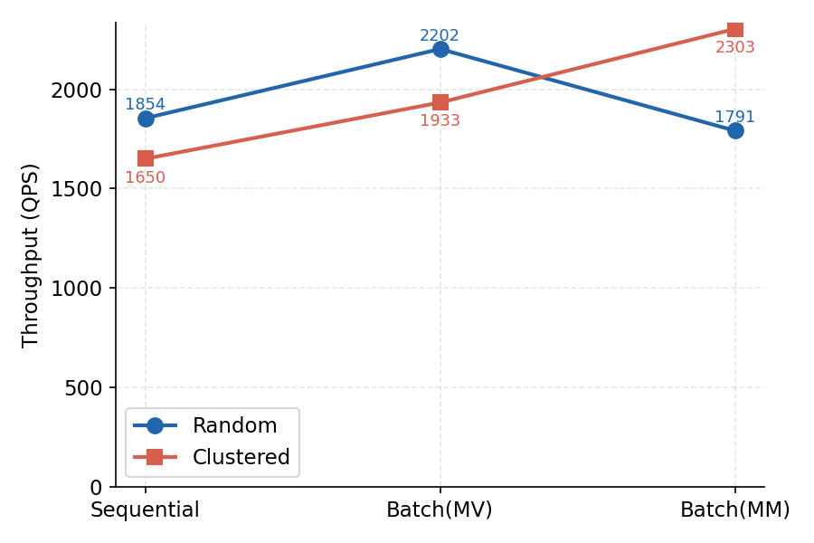
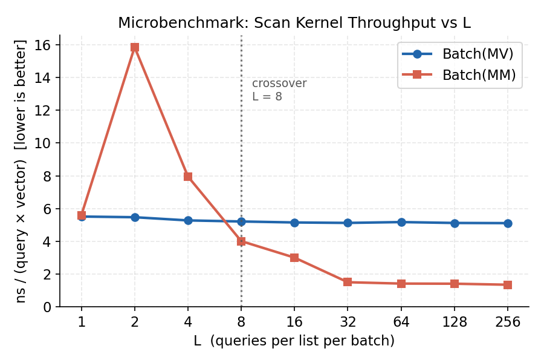
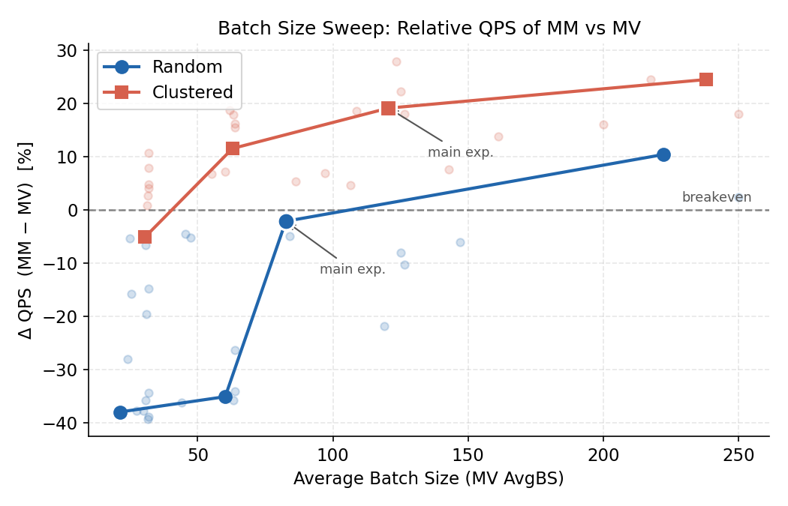

Query Scheduling Optimization
in IVF-based Vector Search
Reorganizing query execution, not the index
Yujia Qian · Xiangyu Guan
MIT 6.5830 · Spring 2026
What is vector search?
Items (text, images, products) are encoded as high-dimensional vectors.
A query is also a vector. Search = return the k nearest items
under L2 or cosine distance.
document / image
→
embedding model
→
128-d vector
→
database of N vectors
Where it appears
- Retrieval-augmented LLMs (RAG)
- Recommendation systems
- Image / product search
Exact search compares against all N vectors — too slow at scale, so production systems use approximate indices.
The IVF index, in one slide
Build
Partition base vectors into 256 clusters via k-means. Each cluster keeps an inverted list of its members.
list 0
list 1
list 2
list 3
…
list 255
Query
- Find 8 nearest centroids (
nprobe = 8)
- Scan only those 8 lists
- Return top-10 (
k = 10)
list 0
list 1 ✓
list 2
list 3 ✓
…
Inside one list scan
Distance computation = distances = vecs @ q — a matrix-vector product.
Bandwidth-bound: load the list once, multiply once.
Most prior work optimizes the index. We don't.
What others do
- Better quantization (PQ, OPQ)
- Graph indices (HNSW, NSG)
- Learned partitioning
What we do
- Keep the IVF index untouched
- Single thread, fixed parameters
- Vary only how queries are scheduled
Question: when many queries arrive concurrently, can we improve throughput
just by reordering the way they execute?
Why we built our own engine
Faiss index.search(Q)
- Stateless black box
- Each query handled independently
- Cross-query optimizations not expressible
Our engine
- Faiss only trains centroids
- Search replaced with custom code
- Exposes
centroid_lookup and scan_list as separate calls
- Scheduler decides which queries hit which list, when
Validated against Faiss for identical Recall@10 before any scheduling experiments.
Key observation: queries that arrive together share lists
Sequential — per-query order
Each query loads its 8 lists independently. Same list re-loaded across queries.
q1: [L3, L7, L11, L42, …]
q2: [L3, L19, L11, L88, …]
q3: [L3, L7, L60, L11, …]
→ L3 loaded 3×, L11 loaded 3×
List-major — reorder by list
Pick a list, serve every query that needs it, move on.
L3: [q1, q2, q3] →
load once
L7: [q1, q3] →
load once
L11: [q1, q2, q3] →
load once
→ same arithmetic, less memory traffic
This is the lever the schedulers in the next slides exploit.
Three schedulers on the same index
|
Sequential |
Batch(MV) |
Batch(MM) |
| Batching |
none |
time-window |
time-window |
| Iteration order |
per-query |
list-major |
list-major |
| Inner kernel |
one GEMV per query |
GEMV per query, looped |
one GEMM for all queries in the list |
Time-window batching
Dual trigger: flush whichever fires first —
Δt = 5 ms or batch size = 128.
Bounds wait time at low load and memory pressure at high load.
MV vs MM: defining the lever L
L = number of queries sharing a list within one batch.
MV per list
for q in queries: vecs @ q
- Arithmetic intensity: 0.5 FLOP/byte, constant in
L
- List streamed once per query — no reuse
- Time scales linearly with
L
MM per list
vecs @ Q.T
- Arithmetic intensity: L/2 FLOP/byte, grows with
L
- Each loaded vector reused across all
L queries
- Has a fixed BLAS setup overhead — hurts at small
L
Crossover point: where MM's intensity advantage overtakes its setup cost.
Hardware-specific — measured empirically below.
L is set by the workload, not the index. So we test both regimes.
Experimental setup
Index & data
- SIFT1M — 1 M vectors, 128-d, L2
- 256 clusters,
nprobe = 8, k = 10
Hardware
- MacBook Pro M3 Pro, 18 GB
- Single-threaded — isolates scheduling from parallelism
Workload — two regimes
- 10 K queries, Poisson arrivals at 2,000 QPS
- Random: original SIFT test queries — small
L
- Clustered: 791 queries from 10 most-queried centroids, sorted & tiled — large
L
Protocol
- 5 runs, mean ± std
- All schedulers achieve identical Recall@10
Main result — workload flips the winner

Figure 1. Throughput across schedulers, both workloads. Δt = 5 ms, MaxBS = 128, 5 runs.
- Random: MV wins (+19% vs Seq); MM regresses (−3%)
- Clustered: MM wins (+40% vs Seq, +19% vs MV)
- Same index, same recall — the only difference is execution order & kernel.
Main result — numbers (5 runs, mean ± std)
Random workload — observed mean L ≈ 3.6–4.2
| Scheduler | QPS | Avg Lat (ms) | P95 Lat (ms) | Recall@10 |
|---|
| Sequential | 1,854 ± 58 | 0.54 | 0.74 | 0.957 |
| Batch(MV) | 2,202 ± 23 | 74.3 | 106.8 | 0.957 |
| Batch(MM) | 1,791 ± 87 | 104.7 | 134.6 | 0.957 |
Clustered workload — observed mean L ≈ 12.4–14.6
| Scheduler | QPS | Avg Lat (ms) | P95 Lat (ms) | Recall@10 |
|---|
| Sequential | 1,650 ± 33 | 0.61 | 0.78 | 0.981 |
| Batch(MV) | 1,933 ± 39 | 96.2 | 127.3 | 0.981 |
| Batch(MM) | 2,303 ± 111 | 58.1 | 87.2 | 0.981 |
Throughput gains carry a queueing latency cost. On clustered, MM is faster and
has lower latency than MV — its faster execution drains the queue earlier.
Microbenchmark: L is the lever — crossover at L = 8

Figure 5. Synthetic list (n = 4,000, d = 128). 50 reps per point. Kernel-only, no scheduler.
- MV is flat at 5.1–5.5 ns / (query · vector) — no
L dependence
- MM falls sharply with
L: 3.77× faster than MV at L = 256
- Crossover at
L = 8 matches the theoretical L/2 = 0.5 intensity equality
- Random's mean
L ≈ 4 sits below; clustered's L ≈ 13 sits well above — fully explains Slide 11
Batch size sweep: L is modulated by both workload and batch size

Figure 2. Δt × MaxBS sweep. Highlighted points = selected configs in the report.
- Random: small batches →
L ≈ 1.5, MM is −38%. Large batches → L ≈ 7, MM crosses to +10%.
- Clustered: even smallest batch keeps
L ≈ 7.5 at the crossover. MM lead grows monotonically to +24%.
- Batch size modulates the gap; workload determines whether MM ever crosses.
Takeaway and limitations
What we showed
- Reordering query execution alone (index untouched) gives a measurable throughput improvement, with recall preserved exactly.
- The right kernel — MV or MM — is governed by
L, the per-list sharing count.
- On our hardware,
L = 8 is the crossover. Workload structure and batch size jointly determine which side of it we land on.
Practical guidance
Estimate likely L from target QPS, latency budget, and query-distribution locality. Choose MV below 8, MM above.
Limitations & future work
- Adaptive scan: switch MV/MM per batch from observed
L — eliminates the random-workload regression
- Multi-threading: an open question — cores already amortize memory traffic, possibly competing with our lever
- SIFT1M only — different dimensionalities and cluster geometries remain to be tested
Full report and code in the project repo. Thanks — happy to take questions.